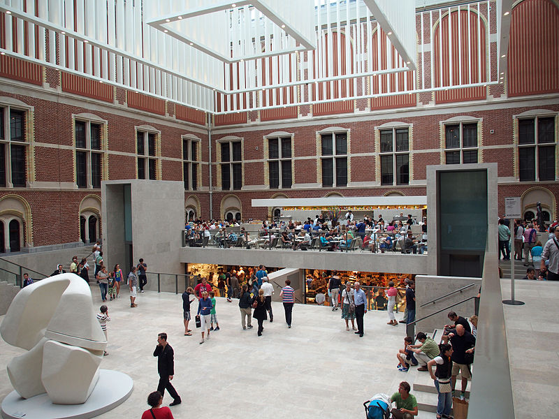

RIJKSMUSEUM

Rijksmuseum, 17. yüzyıl Hollanda sanatına adanmış en geniş koleksiyonun yanı sıra Ortaçağ’dan günümüze uzanan ilgi çekici eserlerin de sergilendiği Hollanda Ulusal Müzesi’dir. 1800 yılında The Hague' de kurulmuştur. 1808 yılında ise Amsterdam' a taşınmıştır.
Hollanda’nın tartışmasız en ünlü müzesi olan Rijksmuseum, aralarında Rembrandt’ın tablolarının yanı sıra Steen, Hals, Vermeer ve diğer önde gelen ressamların eserlerinin bulunduğu 17. yüzyıl Hollanda sanatının en kapsamlı koleksiyonlarını içermektedir. Yaklaşık 1 milyon eserlik bir koleksiyona sahipken bunun 8 bin kadarını sergilemektedirler. Bu eserleri 1200 ile 1600 yılları arasına aittir. Ayrıca küçük bir asya koleksiyonuna da sahiptir.
https://www.rijksmuseum.nl/en
MÜZEDEN ESERLER
Self Portrait - Vincent Van Gogh
1887
Milk Maid - Johannes Vermeer
1660

De slaap van de rede brengt monsters voort - Francisco Goya
1797-1799

De een tegen de ander
- Francisco Goya
1797-1799
Self Portrait - Rembrandt
1628
Girl In A Blue Dress - Johannes Cornelisz Verspronck
1641